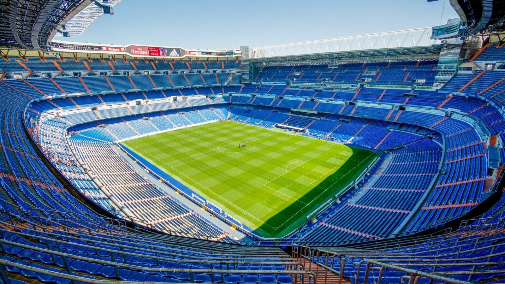
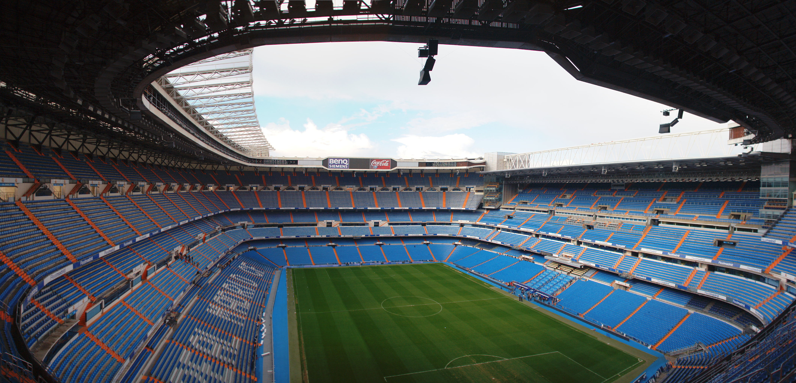
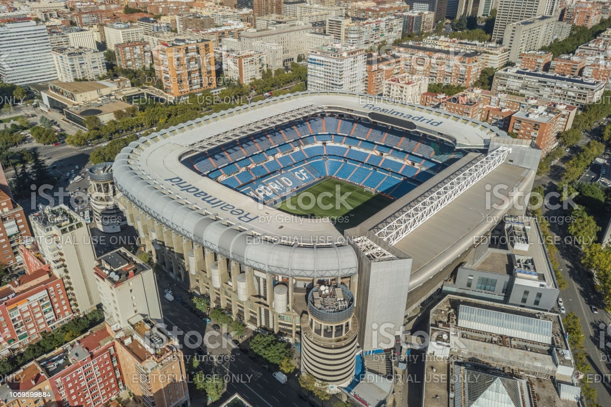

Stadium History
The Santiago Bernabéu Stadium (Spanish: Estadio Santiago Bernabéu, [esˈtaðjo sanˈtjaɣo βeɾnaˈβew] (About this soundlisten)) is a football stadium in Madrid, Spain. With a current seating capacity of 81,044, it has been the home stadium of Real Madrid since its completion in 1947. It is the second-largest stadium in Spain and third-largest home to a top-flight European club after Camp Nou and Westfalenstadion.
Named after footballer and former Real Madrid president Santiago Bernabéu, the stadium is one of the world's most famous football venues. It has hosted the final of the European Cup/UEFA Champions League on four occasions: in 1957, 1969, 1980, 2010. The stadium also hosted the second leg of the 2018 Copa Libertadores Finals, making Santiago Bernabéu the first (and only) stadium to host the two most important premier continental cup finals (UEFA Champions League and Copa Libertadores).
The final matches for the 1964 European Nations' Cup and the 1982 FIFA World Cup were also held at the Bernabéu, making it the first stadium in Europe to host both a UEFA Euro final and a FIFA World Cup final.
The New Santiago Bernabéu project, headed by the GMP-L35-Ribas group of architects, includes the construction of a large cornice at the main entrance. It will fly over the adjacent square without any ground support, forming a large 2,000m2 entrance leading the way to the new Bernabéu.
Among other features of the redevelopment of the stadium (which is expected to finish in mid-2021) is the construction of a new stand on the east side, which will be slightly higher than the current one, although the stadium’s capacity is expected to remain at about 80,000 people. The venue will also gain a retractable roof which will allow for the pitch to be used regardless of the weather and will help to reduce noise pollution.
 